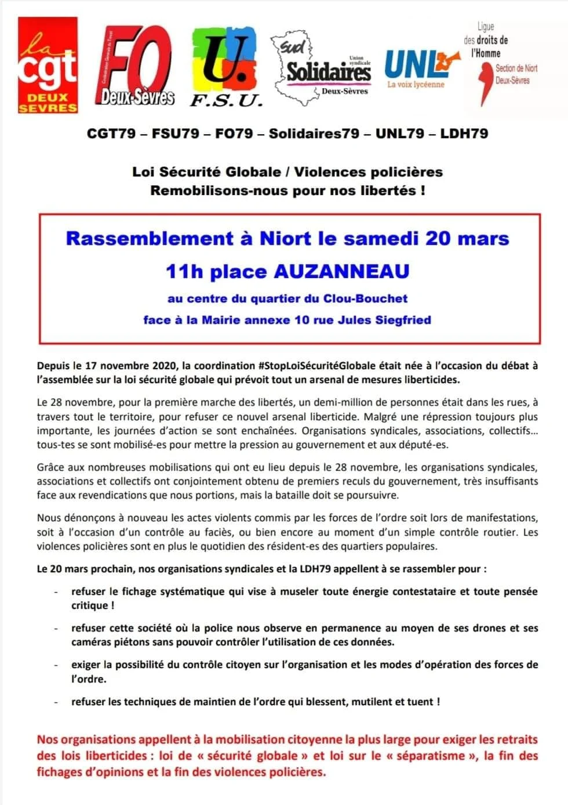

Appel archivé
20 mars à Niort. Un rassemblement annoncé contre la loi Sécurité globale
Date indiquée par Facebook · 19 mars 2021
Repères éditoriaux
Le rendez-vous du 20 mars 2021 était fixé à 11 h à Niort pour demander le retrait de la loi Sécurité globale. La décision constitutionnelle du 20 mai est un repère pour la suite du dossier.
Texte conservé avec la publication
NIORT - Rassemblement samedi 20 mars à 11h pour exiger le retrait de la loi Sécurité Globale.

Sources
Archive rouge · export Facebook · AR-0002-FB-02052
À lire aussi · « Cercle de silence 167 ». La vidéo du rassemblement